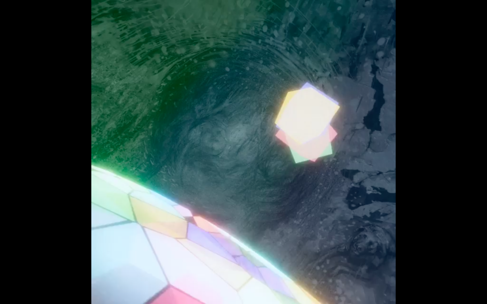

When the team doesn't think in games
VR developer and game designer on Resonance, a cross-discipline VR experience built during Off-Piste 2021, a Den Norske Filmskolen and Crossover Labs program for immersive art. Nominated for Best XR Prototype/Demo at VRINN Awards 2021.
What Resonance was
A VR experience where you step into a black-and-white painting and bring it back to life. The world starts monochrome and still. You interact with elements inside it. Color spreads from where you touch. By the end, the painting is back in color, and you've been the one to put it there.
The concept came from a painter who wanted to know what it felt like for someone to live inside her work. The sound designer scored the spread of color. The film director shaped the camera grammar of how you saw it. I built the thing.

The team
Off-Piste is structured around cross-discipline collaboration. The brief: artists, producers, and creative practitioners pair with developers to build a VR experience under the mentorship of Europe's most experienced immersive-art practitioners. The point is to put people who don't usually work together into a room and see what happens.
Our team was a sound designer, a film director, a painter, and me. The first three came from sound, film, and visual art. None of them had a background in games. Most had never spent serious time with one. I was the only person on the team who thought natively in interactive systems.
What that actually meant
The hardest part wasn't building the experience. It was translating it from three different professional languages into one.
The painter described what the world should feel like in painterly terms: composition, weight, color theory, the relationship between figure and ground. The film director described the pacing and the camera in cinematic terms: the cut, the dolly, the reveal. The sound designer described the audio in his own terms: the texture of a held note, the swell, the silence. All three were precise inside their own disciplines. None of those disciplines have native concepts for "what happens when the user does X and the system responds with Y."
My job became translation. I'd hear a painter's note about composition and turn it into spatial logic the engine could implement. I'd take a film director's pacing instinct and figure out how to express it in VR where you can't actually cut. I'd take a sound designer's emotional arc and wire it to events the user triggers through their own choices. None of the original notes survived in their original form. All of them survived in spirit.
This taught me something I've used in every interactive system I've designed since: the people who care most about how something feels are often the worst at telling you how to build it, because they don't think in builds. The work isn't to demand they translate themselves. It's to learn enough of their language to translate for them.
What shipped
A working VR prototype, playable in headset, that took someone through the painting in roughly fifteen minutes. The color spread mechanic was the central interaction. The sound design responded to the player's tempo and choices. The visual composition shifted between three painterly states depending on how the player moved through the space.
The prototype was nominated for Best XR Prototype/Demo at the VRINN Awards 2021.
What I took from it
The Mørkredd lesson was about scope and architecture. The Resonance lesson is about collaboration. They're complementary.
Most interactive systems are built by teams where most members understand the medium. Resonance was the opposite: I was the only one who understood the medium, and the experience was richer because of that, not despite it. The painter brought ideas I would never have had. The film director's instincts about pacing produced moments more affecting than anything I would have built alone. The sound designer's score gave the work a soul.
The constraint of having to translate everything taught me that the medium isn't the work. The work is what the medium carries.
I do this now with AI agents. The writers and designers I work with at Attensi don't write prompts. They have instincts about voice, character, and what learners actually need. My job is to take those instincts and turn them into systems that behave the way the instincts suggested. The medium changed from VR to AI. The translation work is identical.